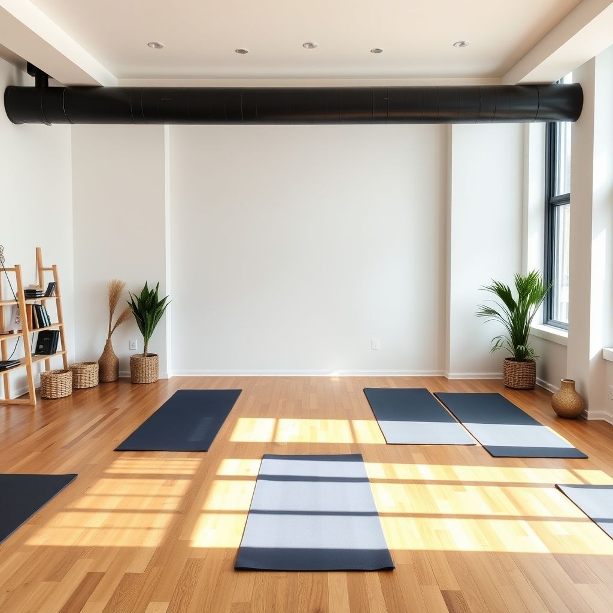

Yoga is een eeuwenoude praktijk die zijn oorsprong vindt in India en zich richt op het creëren van een harmonieuze verbinding tussen lichaam, geest en ademhaling.
Door middel van fysieke houdingen (asana’s), ademtechnieken en meditatie helpt yoga je om stress te verminderen, spieren te versterken en je innerlijke balans te vinden.
In onze drukke, moderne wereld wordt yoga steeds belangrijker als tegenwicht voor de constante prikkels en spanningen.
Regelmatige beoefening verbetert niet alleen flexibiliteit en kracht, maar bevordert ook mentale helderheid, emotionele stabiliteit en een diepe staat van ontspanning.

Yoga is geschikt voor iedereen – van beginners tot ervaren beoefenaars – omdat de oefeningen aangepast kunnen worden aan elk niveau en elke fysieke conditie.
Deze veelzijdigheid maakt het een toegankelijke manier om aan je gezondheid en welzijn te werken, ongeacht je leeftijd of achtergrond.
Naast de fysieke voordelen helpt yoga je om meer aanwezig in het moment te leven.
Door bewuste ademhaling en concentratie ontwikkel je een dieper zelfbewustzijn, wat je kan helpen om beter met stress en emoties om te gaan.
Dit maakt yoga niet alleen een vorm van beweging, maar een levensfilosofie die je dagelijks kunt toepassen.
Of je nu meer energie wilt, beter wilt slapen, stress wilt verminderen of simpelweg een moment van rust zoekt – yoga biedt een pad naar een gezonder, kalmer en evenwichtiger leven.